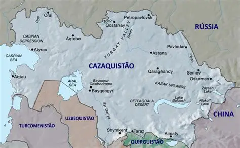
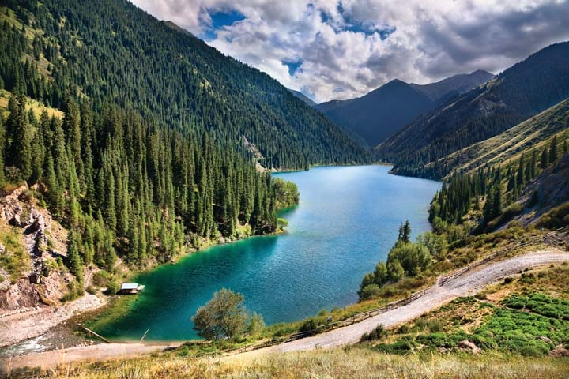
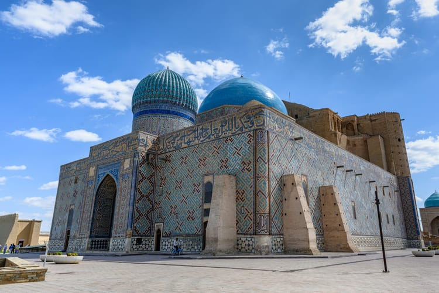
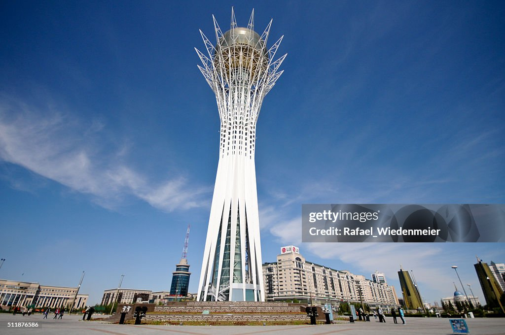
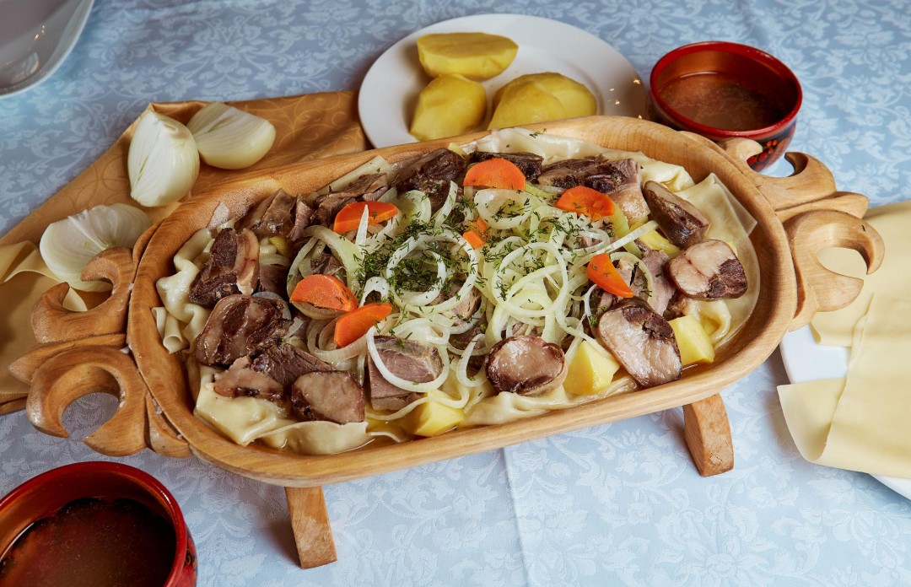

Onde o Cazaquistão está localizado?
O Cazaquistão está localizado na Ásia Central, entre a Europa e a Ásia. É o maior país da Ásia Central e possui uma das maiores extensões territoriais do mundo. O país faz fronteira com a Rússia ao norte e oeste, a China a leste, e com o Quirguistão, o Uzbequistão e o Turcomenistão ao sul. A oeste, também possui litoral no Mar Cáspio.

Uma curiosidade é que o território cazaque é tão extenso que apresenta diferentes paisagens, como grandes estepes, áreas desérticas, montanhas e lagos. Sua localização também teve grande importância histórica, pois a região fazia parte das antigas rotas da Rota da Seda, que conectavam diferentes áreas da Ásia e da Europa.

Turismo
O Cazaquistão possui uma grande diversidade de atrações turísticas, desde paisagens naturais
formadas por montanhas, lagos e cânions até monumentos históricos e construções modernas.
Entre os destinos mais conhecidos estão a região de Almaty, o Parque Nacional Charyn e a
cidade histórica de Turkistan. Essa variedade permite conhecer diferentes aspectos do país,
desde suas belezas naturais até sua história e cultura.
Charyn Canyon

Charyn Canyon possui uma das paisagens naturais mais impressionantes do país
O Charyn Canyon é um dos principais atrativos naturais do país. Localizado na região de Almaty, possui enormes formações rochosas avermelhadas esculpidas pela ação da água e do vento ao longo de milhões de anos. Uma de suas áreas mais famosas é o Vale dos Castelos, conhecido pelas formações rochosas que lembram antigas construções.
Lagos Kolsai

Lagos Kolsai, cercados por montanhas e florestas na região de Almaty
Os Lagos Kolsai formam um conjunto de lagos de montanha cercados pelas paisagens do Tian Shan. Suas águas e as florestas de coníferas ao redor fazem da região um dos destinos naturais mais conhecidos do país. O local também é procurado para atividades como caminhadas e passeios pela natureza.
Mausoléu de Khoja Ahmed Yasawi

Mausoléu de Khoja Ahmed Yasawi, importante patrimônio histórico e arquitetônico
Localizado na cidade de Turkistan, o mausoléu foi construído entre os séculos XIV e XV por iniciativa de Amir Timur, em homenagem ao poeta e líder religioso Khoja Ahmed Yasawi. O monumento é um dos exemplos mais importantes da arquitetura medieval da Ásia Central e faz parte da lista de Patrimônio Mundial da UNESCO desde 2003.
Torre Baiterek

Torre Baiterek, um dos símbolos da moderna capital cazaque
A Torre Baiterek é um dos símbolos de Astana, capital do Cazaquistão. Sua estrutura moderna e a grande esfera dourada no topo fazem dela um dos pontos mais conhecidos da cidade. O monumento representa a modernização e o desenvolvimento da capital.
Gastronomia
A culinária do Cazaquistão tem uma história rica e está muito ligada aos costumes e às tradições do país. Muitos pratos levam carne e massas, refletindo os hábitos do povo cazaque ao longo dos anos. Entre os mais conhecidos estão o Beshbarmak, considerado o prato nacional, o Baursak, um pãozinho frito muito servido em comemorações, e o Kuyrdak, feito com carnes e outros ingredientes. Vamos conhecer um pouco mais sobre esses pratos típicos e os sabores da cultura cazaque!

e
e
e